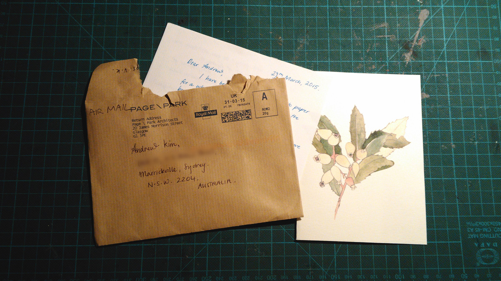

Letter for you
In this era of Whatsapp and Facebook messages where communication is instant and perhaps too easy, nothing beats a handwritten letter from a friend. A personal dedicated letter to you.
After hard day at work, before you enter inside your house you look inside your postbox and find an envelope addressed to you. Suddenly it feels like Christmas again. You carefully open the envelope. You marvel at their handwriting and how much effort has gone into writing a message to you. You read the letter again and again, until you memorise all the words and soak up the love. You feel the thickness and the texture of the paper. You run your fingers along the creases. You analyse the postal stamp and imagine the journey this envelope it took – from the moment your friend put the letter in a postbox, flying across the seas, to arrive at your doorstep.
Imagine a world where everyone took the time to write each other a personal handwritten heart-warming letter. How much happier would the world be?